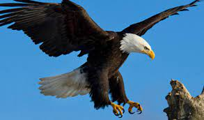
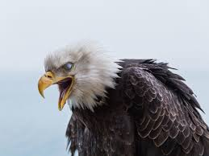

|
Les aigles sont de grands rapaces planeurs diurnes qui possèdent des pattes puissantes et de grandes serres qui leur permettent de saisir leurs proies. Ils ont une vue perçante leur permettant de repérer celles-ci à distance.
Les aigles ont des ailes qui présentent une émargination importante, ce qui les distingue des Falconidae (faucons, éperviers). Comme certaines buses, ils ont des tarses emplumés, mais les aigles en ont de plus grands que celles-ci.
De nombreuses espèces sont vulnérables à la destruction de leur habitat. De plus, situés en tête de chaîne alimentaire, ces oiseaux de proie concentrent dans leur organisme de nombreux polluants (pesticides, métaux lourds...) et par conséquent, de même que de nombreux prédateurs et nécrophages, ils sont fréquemment victimes de saturnisme aviaire, notamment quand ils ingèrent des grenailles de plomb.
|
L'AIGLE UN SYMBOLE CULTURELLE
L'aigle est le symbole de nombreux organismes et nations. Il représente les idées de beauté, de force et de prestige. Les Romains l'utilisaient comme emblème pour leurs armées. Sur certaines pièces de monnaie (l'euro) est affichée le symbole d'une aigle qui est entourée d'étoiles. Ce symbole est l'emblème de l'Allemagne.
L'aigle, capable de s'élever au-dessus des nuages et de fixer le soleil, est universellement considéré comme un symbole à la fois céleste et solaire, les deux aspects pouvant d'ailleurs se confondre.
Roi des oiseaux, il contourne le symbolisme général de ceux-ci, qui est celui des anges, des états spirituels supérieurs. Il est, dans l'antiquité classique, l'oiseau de Zeus, à qui il lui arrive même de s'identifier ; son rôle de roi du ciel est également explicite chez les chamans sibériens. Son identification au soleil, source et rayonnement de la lumière, est essentielle pour les Amérindiens qui, portant des plumes d'aigle, s'identifient à ce rayonnement. Les plumes et le sifflet en os d'aigle sont utilisés dans la danse qui regarde le soleil. Même identification chez les Aztèques, et aussi au Japon : le « Kami » dont le messager ou le support est un aigle est dénommé Aigle du céleste soleil. En Grèce, les aigles partis de l'extrémité du monde, sont dits s'arrêter à la verticale de l'« Omphalos » de Delphes : ils suivent ainsi la trajectoire du soleil, du lever au zénith, qui coïncide avec l'axe du monde.
L'aigle fixant le soleil, c'est aussi le symbole de la perception directe de la lumière intellective. Angelus Silesius a écrit « L'aigle regarde sans crainte le soleil en face ; et toi l'éclat éternel, si ton cœur est pur ». Symbolisme de contemplation auquel se rattache l'attribution de l'aigle à saint Jean et à son évangile. Certaines œuvres d'art du Moyen Âge l'identifient au Christ lui-même, dont il signifie l'Ascension et parfois la Royauté. Cette seconde interprétation est une transposition du symbole romain de l'Empire. Les psaumes en font un symbole de régénération spirituelle, comme le phénix.
Le symbole de l'aigle comporte aussi un aspect maléfique. Le renversement du symbole du Christ en fait une image de l'Antichrist : l'aigle est le rapace cruel, le ravisseur. Il est aussi parfois symbole d'orgueil et d'oppression (ceci est lié au pouvoir impérial). C'est la perversion de son pouvoir.
L'aigle est fortement utilisé comme symbole pour des insignes d'unités de l'Armée de l'air (bien que le symbole central de cette Armée soit l'épervier, appelé « charognard », souvent confondu avec l'aigle). Par exemple, l'aigle se retrouve sur des insignes d'unités, comme celui de l'école militaire de l'air, homologué en 1947 ou encore, l'insigne de poitrine des commandos parachutistes de l'air).
rien que pour vous
|

|
- Crier comme un aigle : crier d'une voix aiguë et perçante
- Avoir des yeux d'aigle : avoir le regard perçant
- Avoir un œil d'aigle : avoir une grande pénétration, tout remarquer
- Nid d'aigle : construction difficilement accessible dans la montagne
- Ce n'est pas un aigle : se dit familièrement d'une personne à l'intelligence médiocre
- comme un aigle fond sur sa proie : assaillir impétueusement, avec soudaineté
|

|
Retour au début
Retour à l'accueil
Page réalisée par Nicolas Letchoumy